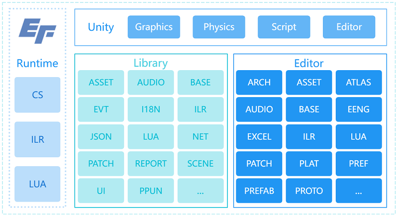

EFramework
A LITE U3D-BASED FRAMEWORK.
Loading...
Searching...
No Matches
EF.U3D
A LITE U3D-BASED FRAMEWORK.
SUMMARY | 功能概述

MANUAL | 使用手册
安装软件
Unity Hub(Required):
https://unity.com/download
Unity 2021.3.30f1(Required):
unityhub://2021.3.30f1/b4360d7cdac4
Visual Studio 2022/2019(Required):
https://visualstudio.microsoft.com/zh-hansvs
Visual Studio Code(Required):
https://code.visualstudio.com
TexturePacker(Required):
https://www.codeandweb.com/texturepacker/download
WinRAR(Required):
http://www.winrar.com.cn/index.htm
Everything(Optional):
https://www.voidtools.com/zh-cn
Notepad++(Optional):
https://soft.eframework.cn/NPP.8.4.2.exe
BeyondCompare(Optional):
https://soft.eframework.cn/BC.3.3.12.exe
UGit(Required):
https://ugit.qq.com
注册工蜂:
https://git.code.tencent.com
微信登录/注册
初始化账号:
姓名小写全拼
配置软件:
UGit软件 > 设置 > 账户 > git.code.tencent.com > 授权登录
SetEnv(Required):
https://soft.eframework.cn/SetEnv.cmd
运行该命令以自动配置系统环境变量（TexturePacker & WinRAR）或手动设置
FAQ | 常见问题
TODO | 待办事项
REFER | 引用说明
LICENSE | 许可声明
Copyright (C) EFramework,
https://eframework.cn
, All rights reserved.
SEE
LICENSE.md
FOR MORE DETAILS.
CHANGELOG | 更新日志
2023.9.24 -
修复Rebuild ILR Component异常（.unity）
优化Excel生成规则（敏感字符转义）
优化Proto生成规则（支持单行注释）
重构Excel和Proto的命名空间
新增GameObjectPool（Unity对象缓存）
新增Loom.SetTimeout/SetInterval等定时器相关接口
2023.8.8 - 2023.9.23
修复ILR/I18N/OBJREFER等组件序列化问题
修复关闭应用时网络异常（网络输出线程优化）
修复网络多线程收发包线程锁异常
修复资源变体移除异常
修复资源引用计数器添加异常
修复推送资源路径包含空格异常问题
修复批处理多平台/首选项应用异常
修复事件通知时解注册异常
修复更新管理器依赖资源卸载异常
修复更新管理器解析整型参数异常
修复跨平台编译闪退问题
修复滚动视图快速滑动引起的显示异常
修复文件清单解析错误引起的资源推送异常
修复AB构建时材质/着色器变体生成异常
修复事件对象池回收逻辑错误
修复Reporter多实例（2D/3D）切换异常
修复网络输出缓冲区阻塞异常
修复PB序列化数组越界问题
修复下载大文件显示异常
优化网络EncodePB逻辑（支持pb对象obtain）
优化Reporter日志显示（避免卡顿）
优化UIHelper.Add/Get/RemoveComponent函数（增加类型判断，避免闪退）
优化安装包/补丁包构建流程（Debug模式使用EditorBuildSettings构建选项）
优化大安装包/补丁包推送流程
优化资源依赖生成流程
优化补丁推送及下载流程
优化音效管理器相关接口
优化Reporter面板显示
优化SceneManager.Goto接口（不再判断是否当前场景）
优化编辑器标题显示（渠道/版本/首选项/分支）
优化AssetManager.LoadScene/Async接口（支持场景路径及设置加载模式）
优化物理函数回调
优化网络连接心跳（内置）
优化自动释放场景/资源
优化ILR环境下Excel读取产生的大量GC
重构ILR跨域继承逻辑
重构ILR序列化Shadow逻辑
重构I18N为I18NApi（避免与.NET核心库冲突）
重构Excel字段访问形式为属性
新增宏EFRAME_MERGE_SCENE_MAT以控制是否合并场景引用的材质
移除Bundle Patch（打包资源）流程
2023.7.1 - 2023.8.7
修复音乐播放/停止功能异常
修复构建UUID日志输出异常
修复日志面板复选按钮逻辑异常及日志内存默认值大小
优化I18N资源处理器
优化ILRBindings生成（保持类型引用，避免被剔除）
优化网络输入/输出流（多线程，高并发）
优化热更新流程日志
优化2G大文件（安装包/补丁包）推送
优化编辑器Zip函数（支持2G裁切）
优化资源标签设置（截取超80字符路径）
优化移除缺失脚本工作流（支持多文件选择）
重构protobuf的encode/decode/size接口（无GC）及代码生成工具
重构UI界面缓存逻辑（不缓存/场景缓存/全局缓存）
重构ILR序列化/反序列化功能
重构ScriptBundle和AssetBundle逻辑
重构共享（缓存）事件
新增构建回退流程
新增资源变体流程
新增资源引用流程
新增资源回退流程
新增ILR脚本导入流程（新增宏::if UNITY_EDITOR || !EFRAME_ILR）
新增编辑器标题显示Git分支名称（优化多人协作流程）
新增AB自动引用计数及内存释放
移除protobuf-net
移除ILR组件isEnabled字段
移除Shader资源处理器
2023.6.12 - 2023.6.30
修复Loom相关接口异常
新增EFRAME_NO_MERGEAB以控制是否合并游离的原始AB包
新增ProcUnicode以限制包含中文的文件（夹）
新增Preferences.UUID字段校验安装包的唯一性
新增Android/Windows构建符号表工作流
优化Reporter状态条显示（LIVE_MODE隐藏和2D模式位置限制）
优化内置补丁包的解压速度
优化构建时工程配置的备份还原逻辑
2023.5.9 - 2023.6.11
修复若干批处理构建相关问题
修复ILR构建异常（特殊路径）
修复ILR枚举序列化问题
修复Protobuf解析异常（非ILR模式）
修复NetConnection断线重连异常
新增UDP网络协议支持
新增H5（WebGL）工作流支持
优化Reporter内存占用及卡顿
优化Reporter中2D窗口自适应
优化Prefs和Plat文件路径及读取方式
优化Prefs文件（同步的）保存工作流
优化测试模式下Patch/Conn/Cgi可配置
优化AssetBundle构建逻辑
2023.4.29 - 2023.5.8
修复跨平台构建异常
修复灯光贴图文件路径归一化异常
修复ILR构建异常
新增快捷构建面板批量构建功能
新增批处理模式构建入口（Jenkins）
新增多语言Text组件转TMP功能
优化构建事件监听
2023.4.21 - 2023.4.28
修复清除空目录功能异常
修复AssetBundle打包一致性问题
新增Default/Android构建管线
优化构建流程，删除Android/Windows平台的符号文件
优化多语言功能
2023.4.17 - 2023.4.20
修复WinArch安装APK异常
修复LogServer字段读取错误
修复多平台配置切换编辑器问题
修复NET和EVT使用Enum类型传递事件ID在ILR/LUA平台引起的异常
优化NET模块，公开若干网络状态事件
优化I18N工作流（支持禁用/清理/重序列化I18N组件）
新增清理无效资源功能（Assets/EFrame/Remove Useless Assets）
新增清理空目录功能（Assets/EFrame/Clear Empty Directory）
新增灯光贴图目录归一化功能
2023.4.15 - 2023.4.16
修复Windows平台Build Patch目标错误问题（StandaloneWindows64/StandaloneWindows）
优化资源构建流程，使用LZ4提升加载速度
优化二进制包构建流程，处理异常情形
优化快捷构建面板内容排序方式
优化多平台设置工作流，支持调整子项顺序以改变首选项
2023.3.25 - 2023.4.14
修复Reporter状态面板超出屏幕问题
优化推送资源流程，剔除.manifest文件
优化构建资源流程，加速shader编译
优化资源标签逻辑，支持设置以文件/文件夹名称
优化二进制包构建流程，提高构建速度
优化快捷构建面板内容排序方式
重构资源工作流程，提升开发速度
完善若干编辑器接口文档
2023.2.19 - 2023.3.24
修复ILR序列化自定义类/枚举异常问题
优化Reveal Manual（查看文档）功能
2023.2.6 - 2023.2.18
修复空字节数组引起的FileManifest.Load异常问题
修复TexturePacker打包图集边缘1个像素重合问题
修复模块内注册事件类型转换错误
修复应用程序关闭导致ILR文件流异常
修复从构建面板打开多平台设置界面显示异常
修复推送补丁包/安装包剩余时间显示异常
优化从ILRComponent域内"启动/停止"协程接口
优化模拟器替换流程(EFrame/Simulator/Select)
优化编辑器模式下内置包解压流程，避免全量下载资源
2023.2.1 - 2023.2.5
新增移除预制/场景中丢失的脚本功能（Remove Missing Scripts）
新增UIRoundRawImage圆形图片组件
新增SetAlpha、SetSpriteRes、SetSpriteName等拓展方法
修复ILR组件HideInInspector字段序列化失败
优化事件ID，支持枚举参数
优化ILR组件重序列化功能，支持单选/多选/所有资源进行操作
优化AddComponent接口，新增attachIfMissing参数（若未找到则挂载）
2023.1.19 - 2023.1.31
完善依赖库和运行时的在线文档
完善若干编辑器代码注释
修复NetManager.SendMsg接口二义性问题
修复Constants.RUNTIME_NAME问题（Unity 2021）
修复场景中引用预制，ILR组件字符覆盖序列化失败的问题
优化FileManifest下载代码（WWW->UnityWebRequest）
2023.1.13 - 2023.1.18
完善底层框架接口注释
修复创建图集警告问题
修复UI包若干警告问题，新增若干针对Transform的拓展（EachChild等）
修复构建AssetBundle时工作空间错误问题（导致重编、严重）
修复多平台切换的显示问题
优化推送补丁包/安装包的进度显示（二阶段：推送中、解压中）
优化NetManager/Modulize->SendMsg/SendCgi，支持发送空包
新增UIHelper.SetSpriteRes，用于动态加载Sprite精灵并赋值给Image对象
2023.1.6 - 2023.1.12
优化Excel导表工具，剔除多余的空行以及字段合法性校验
优化UIWrapContent布局（横向/纵向，列表/网格），新增Space设置间隔、EachItem接口遍历显示列表
修复ILRComponent反序列父类私有/受保护字段问题
修复UnityWebRequest内存泄露问题（A Native Collection has not been disposed...）
2022.12.20 - 2023.1.5
优化ILRComponent生命周期Update/LateUpdate/FixedUpdate
优化图集/预制/场景编辑器的搜索记录
新增了快速构建编辑器
Generated on Fri Nov 17 2023 09:55:24 for EFramework by
1.9.6